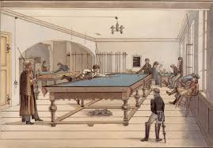

История
Историята на билярдните игри започва още през 15 век, но снукърът като игра се появява доста след това. Предполага се, че снукърът произлиза от вариация на английския билярд, който също се играе на по-голяма маса в сравнение с другите билярдни игри.
Смята се, че за пръв път билярдна игра с топки, близки по брой и начин на подреждане със съвременния снукър, се е появила в Индия, където постепенно е станала много популярна сред британските офицери.
Причина за добавянето на повече топки е прекалено простите разигравания и комбинации при старите версии на английския билярд. Английският билярд се играе на 12-футова маса, на която има само 3 топки - 2 топки-биячи и 1 топка-мишена. Играчите получават 1 точка, когато със своята топка бияч вкарат топката мишена или докоснат със своята топка бияч при един удар топката мишена и топката бияч на противника.
С добавянето на повече топки играта става значително по-сложна. На практика за получаването на играта британците комбинират английския билярд с билярдната игра пирамида. По-късно играта е пренесена във Великобритания.
В началото играта не става популярна, защото подобно на английския билярд масата и приспособленията за игра са прекалено скъпи. Известно време играта остава известна само на аристократите във Великобритания, които са способни да си я позволят. Основен проблем по онова време са билярдните топки, които се произвеждат от слонова кост (в наши дни се използват различни изкуствени материали), защото за направата на един единствен комплект от топки, са необходими бивни от близо 10 слона.